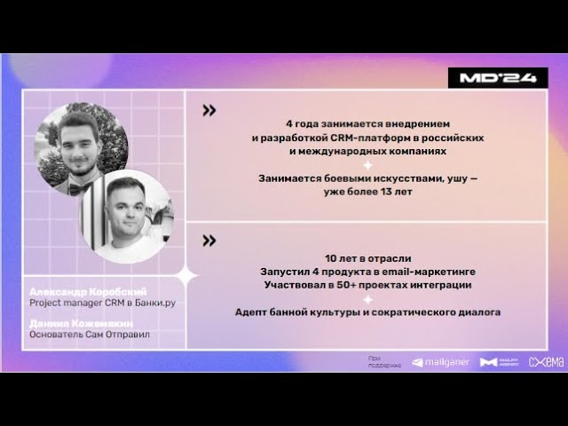

Я отвечаю за рост через экономику клиента — превращаю уже привлечённых пользователей в устойчивую выручку через retention, LTV, корректную атрибуцию и повторную ценность.
Моя сила — рост через влияние на смежные функции: выстраиваю методологию, по которой продукт, маркетинг и финансы видят и считают ценность, — чтобы бизнес рос управляемо, а не наугад.
Продукты проектируются вокруг поведения, потребностей и мотивации клиента, а не оргструктуры.
Рост строится через retention, LTV и повторную ценность — с честной атрибуцией эффекта, а не приписанными конверсиями.
Системы должны позволять менять стратегию без пересборки продукта — быстро и управляемо.
Развитие CRM как платформы customer engagement: данные, коммуникации, продажи, аналитика.
Управление экономикой жизненного цикла клиента: retention, LTV, ARPU и стоимость удержания (CRC) как единая система.
Курирую внедрение и развитие отдельного готового CRM-решения для международных рынков, адаптируя процессы под локальную специфику.
Аудит продукта, CRM и бизнес-процессов: продажи, клиентские сценарии, данные и контуры принятия решений.
Формирование target-модели и приоритетов развития систем и направлений.
Запуск ключевых изменений и первые измеримые результаты.
Перевёл бизнес-модель от доминирующего фокуса на привлечение новых клиентов к управлению жизненным циклом уже имеющихся — это дало устойчивый рост и снизило зависимость от трафика.
Выстроил многоуровневую идентификацию клиентов и связку продаж как основу продуктовой и CRM-стратегии — превратив данные в инструмент принятия решений.
Не инструмент, а слой управления бизнес-взаимодействием: контроль качества, скорость изменений, связка каналов и продаж.
Переложил выручку и расходы на каналы по реальной логике создания ценности — через методологию, принятую финансами, маркетингом и вертикалями. Рост считается по правде, а решения — по факту, а не по удобному прокси.

Разработка собственного технологического решения: retention-архитектура и честная атрибуция эффекта.